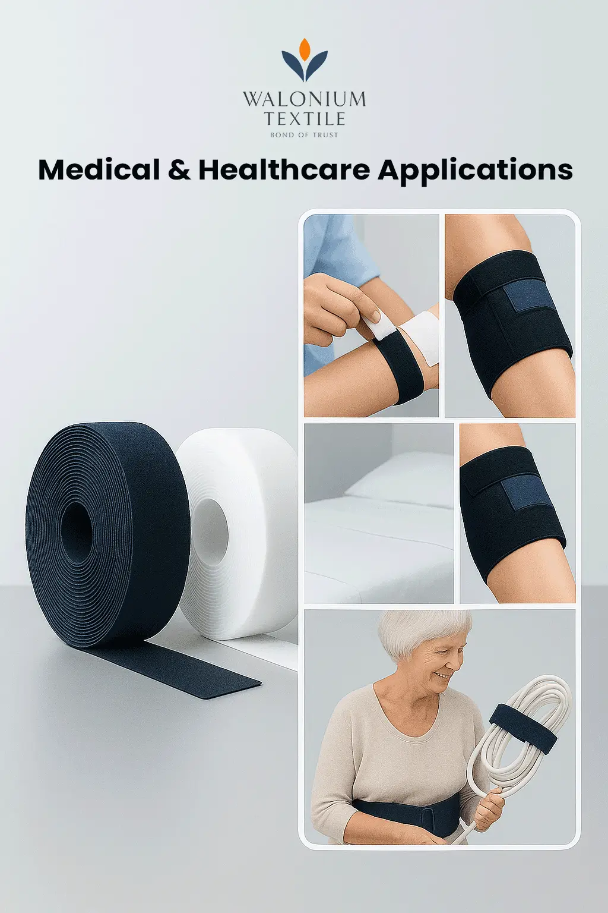

Velcro Tapes for Medical & Healthcare Applications: Safe and Reliable Solutions
The healthcare industry relies on products that combine safety, efficiency, and patient comfort. One such unsung hero is the Velcro tape—a simple yet highly versatile fastening solution. Over the years, Velcro has moved beyond everyday use and earned a strong presence in the medical and healthcare sector, where precision and dependability matter the most.
For more than 3 years, Walonium Textile has been manufacturing and supplying high-quality Velcro tapes across India and global markets. Trusted by medical suppliers and healthcare manufacturers, our tapes are designed to meet the highest standards of safety and durability.
The Role of Velcro Tapes in Modern Healthcare
In hospitals, rehabilitation centers, and home care, Velcro tapes have become indispensable. Their reusable, lightweight, and skin-friendly nature makes them a preferred choice over buttons, zippers, or metal fasteners. More importantly, they allow quick handling in time-sensitive situations, which is crucial in patient care.
Unlike adhesives or plastic clips, Velcro:
- Doesn’t irritate the skin.
- Can be easily sterilized.
- Offers secure fastening without complex mechanisms.
This makes it a go-to fastening material in healthcare settings.
Where Velcro Tapes Are Used in Healthcare
Velcro tapes find application in almost every corner of the medical industry. Some of the most common and impactful uses include:
- Medical Wearables – From patient gowns to blood pressure cuffs, Velcro enables comfortable fitting and easy adjustments.
- Mobility Support & Braces – Neck collars, orthopedic braces, and post-surgical supports rely on Velcro for snug yet flexible fastening.
- Hospital Bed Accessories – Straps made with Velcro are used to safely secure patients, equipment, or IV lines without causing discomfort.
- Child and Elder Care – Velcro is widely used in diapers, protective wear, and senior care aids due to its gentle yet reliable fastening.
- Device Management – Cables, tubes, and medical instruments can be neatly organized and secured with Velcro, minimizing clutter and risks.
Walonium’s Specialized Medical-Grade Velcro
At Walonium Textile, we understand that the healthcare sector requires more than just durability—it needs compliance, hygiene, and safety. That’s why we offer Velcro tapes specifically designed for medical applications.
- Hypoallergenic and skin-friendly materials
- Non-toxic and washable for repeated use
- Customizable widths, colors, and adhesive strengths
- Tested for strength and reliability under hospital conditions
Whether you need Velcro for mass-scale manufacturing of medical devices or hospital supplies, Walonium provides tailored solutions that meet both domestic and international quality standards.
Why B2B Healthcare Buyers Prefer Walonium
For over two decades, Walonium has been the trusted partner of healthcare equipment manufacturers, distributors, and global buyers. We stand apart because we deliver:
- Bulk manufacturing capacity for large-scale healthcare requirements
- PAN India distribution and export services, ensuring timely supply
- Strict quality control checks to meet global medical standards
- Customized Velcro designs based on application requirements
Our reputation is built on reliability, consistency, and innovation in Velcro tape manufacturing.
Safety and Sustainability in Focus
The global healthcare industry is shifting toward eco-friendly and sustainable products. At Walonium, we are committed to environmentally responsible practices while ensuring safety and performance. Our Velcro tapes not only meet international safety certifications but are also manufactured keeping sustainability in mind.
This ensures that hospitals, suppliers, and medical manufacturers choosing Walonium contribute to a safer and greener future.
Future Scope: Velcro in Advanced Healthcare
The future of Velcro in medicine is evolving rapidly, with the rise of wearable healthcare devices, smart clothing, and rehabilitation tech. Velcro tapes are set to play an even bigger role. Flexible fastening combined with lightweight design and comfort makes Velcro ideal for modern medical innovations.
Conclusion
Velcro tapes have proven themselves as a reliable, safe, and versatile solution in the medical and healthcare industry. From securing critical medical devices to ensuring patient comfort, they make life easier for both professionals and patients.
For healthcare businesses looking for certified, durable, and customizable Velcro tapes, Walonium Textile is a name you can trust. With over 3 years of expertise and a strong presence in PAN India and global markets, we are your partner for premium medical-grade Velcro supplies.
Get in touch with Walonium Textile today and source world-class Velcro tapes for your medical and healthcare needs.
FAQ FAQ
Frequently Asked
Question
Velcro tapes are suitable for medical applications due to their skin-friendly nature, ease of sterilization, and secure fastening capabilities without complex mechanisms.They do not irritate the skin and allow for quick handling in time-sensitive situations, which is crucial in patient care.
Walonium's Velcro tapes are specifically designed for medical applications, featuring hypoallergenic and skin-friendly materials, non-toxic and washable properties for repeated use, customizable widths, colors, and adhesive strengths, and they are tested for strength and reliability under hospital conditions.
Velcro tapes are commonly used in hospitals, rehabilitation centers, and home care settings.They are utilized in medical wearables, mobility support and braces, hospital bed accessories, child and elder care products, and for device management to secure cables and instruments.
Healthcare businesses should choose Walonium for Velcro tapes due to our bulk manufacturing capacity, PAN India distribution and export services for timely supply, strict quality control to meet global medical standards, and the ability to provide customized Velcro designs based on specific application requirements.
Yes, Walonium's Velcro tapes are manufactured with a focus on sustainability and environmentally responsible practices.They meet international safety certifications and are designed to contribute to a greener future for the healthcare industry.
Velcro enhances patient comfort by providing a gentle yet reliable fastening solution that is lightweight, reusable, and easily adjustable.This allows for secure yet flexible fitting in medical wearables, mobility supports, and other healthcare products.
The future applications of Velcro in healthcare include its integration into wearable healthcare devices, smart clothing, and rehabilitation technology.Its flexible fastening and lightweight design make it ideal for these modern medical innovations.
You can get in touch with Walonium Textile by visiting our website or contacting our customer service team.We are ready to assist you with sourcing world-class Velcro tapes for your medical and healthcare needs.